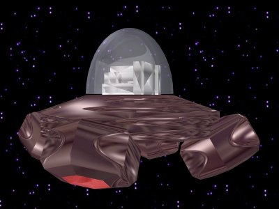

I'm just wondering what colors you get for completing the episode columns since I can't complete any columns. I understand if this is locked or deleted.
Yeah, I joined a month ago, but forgot about it until I came back again. Anyway, I won't be on much though. 
Thanks anyway! 
But then everyone's mad at you
I wish I knew how to sleep.
I wish I knew how to sleep.
Can I join?
"Um, sir?" Viper raises his hand. "Where's the bathroom?"
Viper takes out something heavy from his pack.
"This is a high-speed computer which hasn't come out yet. It is extimated to live for around 500 years before it breaks.
"This is a high-speed computer which hasn't come out yet. It is extimated to live for around 500 years before it breaks.
Yeah, that's my guess.
^Has a signature with his name in it.
^-^
^-^
^Is member #1520
^-^
^-^
Viper looked at the label. "It says it's made out of leather" he said and looked like this. 
"Um, red." he said and put it down. It was too heavy for him anyway.
Can I join the next one? Thanks.
^is a member
^-^
^-^
It's great. 9.5/10. I don't think there are very many flaws. Maybe the "for china" thing should be a little smaller, but it's not that bad.

^It's ok...But there's nothing TOO interesting about it. 4/10.
http://www.wordsmith.org/anagram/anagram.c...m=ptosicstsurei
That should be good enough for you
Over 1000 of them.
That should be good enough for you
Over 1000 of them.
Who's are you doing?
^Has posted in the last 5,000,000 years
^-^
^-^
"Why didn't you bring it?" asked Viper, still recovering from holding up the computor for a while.
Um, did you guys know that 9-1 is impossible? Cuz it is...
^Doesn't have 0 posts
^-^
^-^
^Likes bunny
^-^
^-^
^Is part of WebRiddler
^-^
^-^
^Thinks I'm creepy
What the heck? We had an entire conversation! I'm justice from there!
^-^
What the heck? We had an entire conversation! I'm justice from there!
^-^
^Most likely to make maps that people actually like
"Hmm...No I can't. Is something wrong here?: Viper squints, but still doesn't see Trogdors computor.
Viper squints, but still doesn't see Trogdors computor.^Most likely to be saying what someone's most likely to do
^-^
^-^
^Meh, it's not too hot. Teh colors give you a 3, and the bottom one bumps it to a 4. 4/10
^But it already is! ^-^
I wish there was a such thing as good television.
I wish there was a such thing as good television.
^Said bunny in big letters
^-^
^-^
I did. But 
^Most likely to like cartoon cats
^Just annoyed me
^-^
^-^
^Didn't bother signing up/logging in
^-^
^-^
First of all...Translation?
^But then she's so smart she knows where you live and bashes your head in while you're sleeping.
I wish I knew what a floor was.
I wish I knew what a floor was.
My intellect. 
I get what you are saying now, troggy, but that was kinda unexpected in the way you put it.
-0-0-0-0-0-0-0-0-0-0-0-0-0-0-0-0-0-0-0-0-0-0-0-0-0-0-0-0-0-0-0-0-0-0-0-0-0-0-0-
(new way to change peeples that are talking)
Prof. Brain:
Troggy, one silver star. Rincewind, dont make me ban you, MAKE THAT CHART!!!
That would be a qrpgg ban, by the way.
-1-1-1-1-1-1-1-1-1-1-1-1-1-1-1-1-1-1-1-1-1-1-1-1-1-1-1-1-1-1-1-1-1-1-1-1-1-1-1-
Cool
Drool
Cruel
-A rhyme by me. Like it?
3 14 14 11 = 42
4 18 14 14 11 = 61
3 18 21 5 11 = 58
and 65 from qrpgg, = 226. I don't think that's it...
What is a chinese crazy thing?
Cheese Mafia
Cheese Mafia
Oh, I turned the letters into numbers, like a=1, b=2, etc. also with qrpgg and added them all up.
Oh, and want chocolate? *holds up dark chocolate delight bar*
Oh, and want chocolate? *holds up dark chocolate delight bar*
^But then you get banned from the computer forever
I wish I knew what I knew.
I wish I knew what I knew.
****/5. Meh, it's ok...
^-^
^-^
Hey, can I get a sig and an avie with some kind of fire theme? Thanks.
What is the most boring part of a movie?
Random gibberish
Random gibberish
Wow, I must suck. I can't get any secrets since I can't get past episode 5.
Hey! Thanks! I love it!
But then the cheese farted.
^Has a tongue
Wow, I must suck. I can't get any secrets since I can't get past episode 5.That's not the definition of sucking. Youre ust inexperienced, and the only way to get more experienced is to practice. With the right amount of practice, most things in N will come easy to you.
That's wrong in my case. I've been stuck on episode 5 for a month and a half.
^HAZ EGS IN HIZ SIGzors
(It's has eggs in his sig)
(It's has eggs in his sig)
Well, I guess my explanation was good enough for him, although the actual result of it was nothing I expected
7/10. It looks pretty cool, but once you see it long enough, it gets a little repetative.
Underground Fun
This is my latest map, and I currently have 2 0's on it and a 5. I know I got really mad and posted like an idiot, but I wanted it to have an actual chance to have the rating it deserves.
This is a test level.
This is my latest map, and I currently have 2 0's on it and a 5. I know I got really mad and posted like an idiot, but I wanted it to have an actual chance to have the rating it deserves.
This is a test level.
But then it blows up, right in your room. Ouch.
I wish for JEETZORS!
I wish for JEETZORS!
$Easy Map Alpha#Ado7#Action#1111111111111111111111111111111111111111111111111111111111111111111111119000000000000000611111100000000000000000111111000000000000000001111110000000000000000011111100;11111111111<0011111100111111111111100111111001111111111111001111110011111111111110011111100111111111111100111111001111111111111001111110011111111111110011111100111111111111100111111001111111111111001111110011111111111110011111100111111111111100111111001111111111111001111110011111111111110011111100111111111111100111111001111111111111001111110011111111111110011111100:11111111111=0011111100000000000000000111111000000000000000001111110000000000000000011111180000000000000007111111111111111111111111111111111111111111111111111111111111111111111111|5^396,492!0^564,468!0^540,468!0^516,468!0^492,468!0^468,468!0^444,468!0^348,468!0^324,468!0^300,468!0^276,468!0^252,468!0^228,468!0^180,420!0^180,396!0^180,372!0^180,348!0^180,324!0^180,300!0^180,276!0^180,252!0^180,228!0^180,204!0^180,180!0^228,132!0^252,132!0^276,132!0^300,132!0^324,132!0^348,132!0^372,132!0^444,132!0^468,132!0^492,132!0^516,132!0^540,132!0^564,132!0^612,180!0^612,204!0^612,228!0^612,252!0^612,276!0^612,300!0^612,324!0^612,348!0^612,372!0^612,396!0^612,420!0^108,492!0^108,468!0^204,468!0^180,444!0^588,468!0^612,444!0^612,156!0^588,132!0^204,132!0^180,156!0^156,492!0^108,444!0^108,420!0^108,396!0^108,372!0^108,348!0^108,324!0^108,300!0^108,276!0^108,252!0^108,228!0^108,204!0^108,180!0^108,156!0^108,132!0^108,108!0^132,108!0^156,108!0^180,108!0^204,108!0^372,108!0^396,108!0^420,108!0^588,108!0^612,108!0^636,108!0^660,108!0^684,108!0^684,132!0^684,156!0^684,180!0^684,204!0^684,228!0^684,252!0^684,276!0^684,300!0^684,324!0^684,348!0^684,372!0^684,396!0^684,420!0^684,444!0^684,468!0^684,492!0^636,492!0^612,492!0^588,492!0^540,492!0^516,492!0^492,492!0^444,492!0^420,492!0^372,492!0^348,492!0^300,492!0^276,492!0^252,492!0^204,492!0^180,492!11^396,492,396,132!12^324,504!12^228,504!12^132,504!12^468,504!12^564,504!12^660,504!0^420,132!4^396,138,1#
All right. This was the exact message.
Quote: "99turtle99'Wait a minute, that's a fake!!! Its not one of the ORIGINALS!! I will confiscate it, you can have it back after you figure out how to get out. Spread the word on the RPG
7/10. It looks pretty cool, but once you see it long enough, it gets a little repetative.^
|
Aju could've rated mine...
But it doesn't have any channels.
I wish for UNITEDZORS FEETZORS
I wish for UNITEDZORS FEETZORS
But you get arrested for smuggling drugs.
I wish 4 43798485973894759827908349785709823 squared
I wish 4 43798485973894759827908349785709823 squared
Well, seeing that we are all DEAD now.... Professor, I never really liked you. We're THROUGH! I want a divorce!
You're married?!
That seems highly unlikely. Anyway, wanna show us the answer, seeing as we lost anyway?
Naaaahhhhh, Ill give you guys some more time, with an EASY HINT!
*the way to get out*
Professor, since you give in to br*b*s so easily, how about *insert name of food here* in exchange for letting me go?
(ONE MORE SHOW AND TELL. IF IT IS BAD, YOU ARE DEAD)
"Um professor, we can bribe you with chocolate or whatever? I don't think that'd work, seeing as I was nearly killed when I tried"
^Banned for having an avatar which was almost unoriginal
^Banned for thinking I should be banned for something that wasn't my fault
But then N comes back to life to stab N for stabbing abcdman2 for stabbing N for stabbing abcdman2 for making a run-on sentence. ()
)(oops)
Then Viper093 laughs and blows up the corpse.
Then Viper093 laughs and blows up the corpse.
^Banned for not knowing what FJSKDTLSGFHLFKUT is
^Banning for no reason
^Banned for joining in June
"Hey, professor! Can I leave if I give you this computer?"
Does that mean I win too? Even though I'm dead?
And how did everything tie in with that? :huh:
And how did everything tie in with that? :huh:
^Isn't sure about his name.
*is suddenly resurrected* Yay! *leaves*
(The last post was just a question and stuff)
(The last post was just a question and stuff)
Penguin Drop! lol (I know it's wrong so boo-boo )
)Wow. That was 3/4 of a month or so later that you submitted something. Just, wow.
I'd say the deadline passed long ago.
I'd say the deadline passed long ago.
I got to 1-0. Good for me.
How about 100,000 deaths from each enemy to unlock all levels? Or maybe 500,000?
Not really. I don't think this is a good idea.
^Has a ripped off avatar
I'm /in
And will is ill for some reason. Is that it?
EDIT: Ooh! Another one!
You said it "may not" be a good idea to escape, but then you said that you WILL be shot if you try. Is that it?
And will is ill for some reason. Is that it?
EDIT: Ooh! Another one!
You said it "may not" be a good idea to escape, but then you said that you WILL be shot if you try. Is that it?
I was wrong? That was a waste of about 3 minutes then.
That was a waste of about 3 minutes then. How come people get better and better while I can't even get past episode 5? Don't say practice, because I do. A lot.
Is there a kind of tutorial that is somewhat easy but really helps you in the game?
Is there a kind of tutorial that is somewhat easy but really helps you in the game?
If I had one, it would probably be "revenge of the shadow king:
Well, I hope it comes out soon, because I just have nothing to do. 
1: I check highscores a lot. However, there are lots of moves and stuff that I can't pull off.
2: I do know how to walljump and do all that stuff. (just look at my highscore in episode 1, level 3)
3: I know about thwumps, since I was able to get past 0-2
4: I knew this for a long time
5: Didn't know that, but then again, it was somewhat obvious.
Those are just answering Twistkills points.
2: I do know how to walljump and do all that stuff. (just look at my highscore in episode 1, level 3)
3: I know about thwumps, since I was able to get past 0-2
4: I knew this for a long time
5: Didn't know that, but then again, it was somewhat obvious.
Those are just answering Twistkills points.
Don't say practice, because I do. A lot.
...
Yeah, and the fact that I have nothing to do, and nothing to do, and nothing to do,-
I tried to get the score like 500 times. It's not easy to get a score that high on any level.
I tried to get the score like 500 times. It's not easy to get a score that high on any level.
5-4
*GRUMBLE*
Do you know how long I've practiced? At least 4 months.
Do you know how long I've practiced? At least 4 months.
Was it binary? I could've gotten that 
*gulp* Ok...
Made an RPG I can't win in
^Having an egyptian reference in it
and having the letter G in it,
and having the letter G in it,
I voted for (deleted because I don't want revenge)
*sigh* In about 2 weeks, only like 5 posts were made in mafia 5. I PM'ed him about it quite a while ago, and got a reply saying 'BE PATIENT'
/join
*grass grows*
Hard levels? I'm stuck on 4, 11, 51, and 91. Hmph.
Well, why do people try if they "don't have it"?
Well, why do people try if they "don't have it"?
Every time I play now, I get so mad I have to be kicked off the computer. N is starting to suck.
Too late. I deleted it.
But since it's made of plasma, it melts and you die.
I wish for money.
I wish for money.
Q: OMG!!! HWO DUE EYE PLAA?!?!?!!????!oneone?!??!?/!oneoneone/?!?!??!?!
A: By playing.
DO NOT TOUCH ANYTHING! Just stay there dodging everything for 90 seconds, when you get to the next level. To get to the next level immediatly, touch a red spiky thing, or press the X button on the top right corner.
To unlock 5,000,000,000 flavors, press K 1,000,000 times without dying.
A: By playing.
DO NOT TOUCH ANYTHING! Just stay there dodging everything for 90 seconds, when you get to the next level. To get to the next level immediatly, touch a red spiky thing, or press the X button on the top right corner.
To unlock 5,000,000,000 flavors, press K 1,000,000 times without dying.
... I'm NOT good, I just felt like playing the same level for 3 hours straight. I can't do that for every single level.
you deserve to be in a really stupid forum like Clovics, you're so dumb.
They're so dumb, they'd like it.
They're so dumb, they'd like it.
Didn't work.
Atticus. We meet again.
I didn't forget #10, I was just "doing" #3.
EDIT: Almost got 51
EDIT AGAIN: Got it
EDIT AGAIN AGAIN: AAAAAAAAAAAANNNNNNNNNNNNNNNNNSSSSSSSSSSSSSSSWWWWWWWWWWEEEEEEEEEEEEEEERRRRRRRRRRRRR MMMMMMMMMMMEEEEEEEEEEEEEEE
EDIT: Almost got 51
EDIT AGAIN: Got it
EDIT AGAIN AGAIN: AAAAAAAAAAAANNNNNNNNNNNNNNNNNSSSSSSSSSSSSSSSWWWWWWWWWWEEEEEEEEEEEEEEERRRRRRRRRRRRR MMMMMMMMMMMEEEEEEEEEEEEEEE
No I don't, idiot
OMGWTFBBQ *pretends to leave*
Argh. I don't know if I can make a base. I have paint, and I can't move anything from the document anyway...
EDIT: Should I just give up my spot?
EDIT: Should I just give up my spot?
...Any more though?
Ok, that was REALLY stupid
He made a dumb RPG that barely lasted a week
Ok, since it's over, can I post here?
I think this would've been better if you "prodded" (pm) people that they were still in the game, but too late now.
Should I host the next one?
ALSO: What were the roles?
I think this would've been better if you "prodded" (pm) people that they were still in the game, but too late now.
Should I host the next one?
ALSO: What were the roles?
Desperate People- are Beggars
Beggars- are Poor
Poor- opposite of rich
Rich- an example is millionare
Millionare- Person with lots of money
Money-
Beggars- are Poor
Poor- opposite of rich
Rich- an example is millionare
Millionare- Person with lots of money
Money-
Sticky- what glue is
Glue- is white
White- is a color
Color- what you can't see if you're color-blind
Color-Blind- Can only see in white and black
Black-
Glue- is white
White- is a color
Color- what you can't see if you're color-blind
Color-Blind- Can only see in white and black
Black-
^ I totally agree with his PS. It's so aggrivating when you say "don't say highscores" or something like that, and they do it any way. It doesn't help.
And be happy. You're a LOT father than I am...
And be happy. You're a LOT father than I am...
Hmph. Mine only goes to 4, 13, 21, 52, and 91.
The rest are at 0's
The rest are at 0's
^ That was actually pretty easy.
How do you get 70? :huh:
1 is a fish. The glass is a fishtank. The person dropped the fishtank and was killed by infection from the broken glass, while the fish died from having no water.
QUESTION
Think of a number between 1 & 10. Times it by 5. Then by 2. Finally, divide it by your original number. Times it by 3, then by 2. Finally, add 3.
Your new number is 63.
How'd I get that?
QUESTION
Think of a number between 1 & 10. Times it by 5. Then by 2. Finally, divide it by your original number. Times it by 3, then by 2. Finally, add 3.
Your new number is 63.
How'd I get that?
A new order began; a more Roman age bred Rowena
I thought this was talk about bots... 
Then why are we talking about thread starting and flood control?
Yes?
The farthest I got was to 05, but now I'm at 04...
EDIT: 60's are seeming a bit easy, now I got to 61-4...
EDIT: 60's are seeming a bit easy, now I got to 61-4...
The farthest column I have is the 00's, which is at 04. (was at 05 though...)
Isn't it kind of strange that a single column focuses on mostly a single enemy?
For example, almost every single 00 column's levels had mostly drones for the threat, while the 60's focused on gauss turrets.
Isn't this a little strange? Has it been mentioned before?
I'll post more later when I can.
For example, almost every single 00 column's levels had mostly drones for the threat, while the 60's focused on gauss turrets.
Isn't this a little strange? Has it been mentioned before?
I'll post more later when I can.
I know that. More-or-less the trouble is getting there in the first place. Ever since my computer was redone I had trouble getting past 4. Although by now I'm pretty much focusing on the 60's right now, although 61-4 makes me want to "FJSDKLTRKSDJFKHJKLDSHJKLHRHGTHDFSTKHUFDHK!!!!!!!!!!!!!!!!!!!!!! **** **** **** **** ****" right now.
Make a gauss turret with other things, and put one in the middle
Resurrection much?
*watches Zacko hit himself with his own sludge, then picks up gummi dog poop and flings it at him*
I wonder which one features mines!
I get a flame-thrower and start putting the food on fire and burning down the building. When the cops come I'm nowhere in sight.
Here- Isn't there
There- is away from you
You- yourself
Yourself- in the quote "by yourself"
Quote (to avoid doing the same thing twice)- a saying that was already said
Said-
There- is away from you
You- yourself
Yourself- in the quote "by yourself"
Quote (to avoid doing the same thing twice)- a saying that was already said
Said-
The cops are on fire, and they throw a gummi football at a wall, and it brakes down. Trouble is, it was a support wall. ")
AARGH. *flings dog poop at elaxion*
WTF???
Well, I wonder what the 80's focus on
Anteaters- havelong snouts
Snouts- animals noses
Noses- what we smell with
Smell- Another word for stink
Stink-
Snouts- animals noses
Noses- what we smell with
Smell- Another word for stink
Stink-
Depends on how old you are.
How many monkeys does it take to screw in a lightbulb.
How many monkeys does it take to screw in a lightbulb.
I'm officially on 04, 12, 20, 30, 40, 52, 62, 70, 80, and 91. I know, I suck.
This is where you can play mafia via a bot, which in retrospect, is better than a game modded by players.
http://mtgsalvation.com/applet/index.php?nick=
Put your desired username at the end.
http://mtgsalvation.com/applet/index.php?nick=
Put your desired username at the end.
Is it possible to download 1.2 or 1.3 anymore?
I want to be a dark blue ninja which has a stick into a wall and is hanging from it.
Why? I only completed 11 levels in half-a-year.
Because I want it
God I must suck. I can't even get the pink one
In fact, I only beat 10 columns of the whole game, so yeah, I suck.
In fact, I only beat 10 columns of the whole game, so yeah, I suck.
Ban me
I want to be banned
Nah. I gave up a while ago.
I closed it after playing 1 level. I hated it that bad.
People sniping, because it's really annoying when you have a 4 before you go to bed, then when you get up, it becomes a 2.5. What sniping does is make peoples maps seem worse then they actually are. What anti-snipers do is the exact opposite, which make maps seem better than they are. People have a right to complain as their maps aren't being rated fairly, and end up being lower. What furthers the frustration is that they don't comment on why, which should actually be expected.
So people complaining being annoying is correct, but they have good reason.
So people complaining being annoying is correct, but they have good reason.
I had a 5 map once, but after a few votes, none of which were accompanied by a comment, it became a 1.5.
ANNOYING
ANNOYING
Star Wars Knights of the Old Republic II: The Sith Lords!
I think we got that a few months ago
Oooh! Is it a post? [/retardedanswer]
I like it. There could be really common 1 second gold, and rare 10 second gold. Ut would add a new twist and challenge to upcoming maps.
This will be a game of mafia ( ) that will have lots of strange roles in it. I suggest you read the mafiascum wiki before you sign-up ( ) so that you have an idea as to what the roles may be.
Some may be real, and some may be made up.
SIGN-UPS
1. Trogdor007
2. Mongy
3. Luminaflare
4. spiker5
5.
6.
7.
8.
9.
10.
11.
12.
) that will have lots of strange roles in it. I suggest you read the mafiascum wiki before you sign-up ( ) so that you have an idea as to what the roles may be.Some may be real, and some may be made up.
SIGN-UPS
1. Trogdor007
2. Mongy
3. Luminaflare
4. spiker5
5.
6.
7.
8.
9.
10.
11.
12.
Use it so that while you're doing something else, it doesn't go reaaaaalllllllly slow, and it goes at about 80% speed instead of around 20
I bet it's something that will probably disappoint people after being impatient for a couple of weeks
In response to the misspelling: I already reported it a couple months or so ago =/
Um, is it in the FRAGirc server?
err
didn't notice the second page
Cornea > Something I don't know > Most countries > Unknown Things > Unknown to me > Betelgeuse
Yellow and Danger
didn't notice the second page
Cornea > Something I don't know > Most countries > Unknown Things > Unknown to me > Betelgeuse
Yellow and Danger
Feel free.
Oh, and I've modded/am modding at least 5-8 games, so I know what I'm doing. I'm even using the set-up on another site.
Oh, and I've modded/am modding at least 5-8 games, so I know what I'm doing. I'm even using the set-up on another site.
I'm taking the second blue spot.
However, if we have to make pictures, I'm out.
However, if we have to make pictures, I'm out.
Hey Luminaflare. Can you tell me how to make a lightsaber? I can probably make a good one if I knew how.
Um, because N gets boring?
Where's the "none" option? =(
But that's bad in itself
I wish I knew how to make lightsabers in Pivot
I wish I knew how to make lightsabers in Pivot
Hmm. 4/5 is much too high. About 2.5-3/5 is better =/
And noob maps aren't SO bad. I mean, what if they're really trying, but have no experience yet?
And noob maps aren't SO bad. I mean, what if they're really trying, but have no experience yet?
Can you make 2 versions? One with and one without restarting? Because I know I'd probably never make it with the restarting thing. =(
Are you on practice mode?
Maybe having different difficulty levels might help noobs complete the game faster. Like easy takes away some of the enemies/mines, but also takes away some gold. The medium would be like the way it is now. The hard level would add mines, enemies, gold, stuff like that.
Would that help?
Would that help?
Come on...
Not ALL of the enemies. Maybe you could move them around to make things easier, and remove SOME gold, move some others, and stuff.
I got really tired of it when I couldn't beat episode 5, but I didn't even bother to beat 4 after the computer wipe.
So basically having really easy episodes then suddenly really hard episodes is a good learning curve?
I think so.
http://numa.notdot.net/map/51283
I don't care too much about ratings, I just want advice on how to make it better. =/
I don't care too much about ratings, I just want advice on how to make it better. =/
Err, I can't load the sprites =/
If you put them on top of each other, I think you just go through them. =/
Guys. Any way to turn the sprites into .stk's?
How about a mode where a timer clicks backwords from the other one, and you have to basically get to the exit as fast as you can, but to keep people who think that a straight run to the terminal-door is plausible, you must get at least half the gold. It would put an interesting twist to the levels.
Ok, nvm.
He doesn't die on mine. =/
Certain number of kills.
And btw. DO NOT PLAY LARGE GAMES AS HUMANS. Because you WILL lose. If aliens get to stage 3, then humans are pretty much screwed.
And btw. DO NOT PLAY LARGE GAMES AS HUMANS. Because you WILL lose. If aliens get to stage 3, then humans are pretty much screwed.
That's sad.
For each level, there's an option of a "race" type thing. You have to get to the exit in the fastest time possible, but you must get at least half gold (where applicable). Basically, the gold doesn't add or subtract anything, it's all about speed.
Then delete them in the mode?
It could only be for metanet levels...
Or there could be a type of gold that doesn't appear in this mode. I dunno.
And as an unlockable, I don't think that very many people would be able to access it. I mean, I'd love to see it, but I think that you should only be able to do it for levels that you have already beaten, so that you don't have to wait to unlock the whole thing, but unlock it one level at a time.
It could only be for metanet levels...
Or there could be a type of gold that doesn't appear in this mode. I dunno.
And as an unlockable, I don't think that very many people would be able to access it. I mean, I'd love to see it, but I think that you should only be able to do it for levels that you have already beaten, so that you don't have to wait to unlock the whole thing, but unlock it one level at a time.
Prepare for a long post!
Ok, 10 people will be playing this game, and start with 1000 hit points. They can reach inside a box or hurt another player each turn. If you hurt another player directly, they lose 25 hit points. If you reach inside a box, you get the hit point bonus inside. Each round, every box is randomized, so you can choose the same box in different rounds.
Here's an example. (100 HP, 10 to hit to make it quicker)
BOX
123
456
789
player 1 hurts player 2
player 2 reachs inside box 4 (gains 15 HP)
player 3 reachs inside box 7 (loses 20 HP)
ROUND ONE RESULTS
PLAYER 2: 105 HP
PLAYER 1: 100 HP
PLAYER 3: 80 HP
player 1 reaches inside box 6 (loses 10 HP)
player 2 hurts player 3
player 3 hurts player 1
ROUND TWO RESULTS
PLAYER 2: 105 HP
PLAYER 1: 80 HP
PLAYER 3: 70 HP
player 1 reaches inside box 8 (gains 15 HP)
player 2 reaches inside box 2 (gains 5 HP)
player 3 hurts player 2
ROUND THREE RESULTS
PLAYER 2: 100 HP
PLAYER 1: 95 HP
PLAYER 3: 70 HP
I won't continue because that would be too much reading. Note that your actions are not said out loud. That's a weird twist to it.
Ok, 10 people will be playing this game, and start with 1000 hit points. They can reach inside a box or hurt another player each turn. If you hurt another player directly, they lose 25 hit points. If you reach inside a box, you get the hit point bonus inside. Each round, every box is randomized, so you can choose the same box in different rounds.
Here's an example. (100 HP, 10 to hit to make it quicker)
BOX
123
456
789
player 1 hurts player 2
player 2 reachs inside box 4 (gains 15 HP)
player 3 reachs inside box 7 (loses 20 HP)
ROUND ONE RESULTS
PLAYER 2: 105 HP
PLAYER 1: 100 HP
PLAYER 3: 80 HP
player 1 reaches inside box 6 (loses 10 HP)
player 2 hurts player 3
player 3 hurts player 1
ROUND TWO RESULTS
PLAYER 2: 105 HP
PLAYER 1: 80 HP
PLAYER 3: 70 HP
player 1 reaches inside box 8 (gains 15 HP)
player 2 reaches inside box 2 (gains 5 HP)
player 3 hurts player 2
ROUND THREE RESULTS
PLAYER 2: 100 HP
PLAYER 1: 95 HP
PLAYER 3: 70 HP
I won't continue because that would be too much reading. Note that your actions are not said out loud. That's a weird twist to it.
Whole? I don't think so.
Have you ever slept in a bathtub before?
Have you ever slept in a bathtub before?
FPS ftw
Confusing? You have to get to the exit as fast as you can while getting at least half gold.
I wonder if The new game will have a campaign...
Apple
Anonomous
Pizza
Party
Leprechaun
Entity
Earwax
Anonomous
Pizza
Party
Leprechaun
Entity
Earwax
I start playing a game, get my computer shut down by this error, and I can't get past it. No matter what I do, I get the error. I even uninstalled half of my stuff (even some things I regularly use), and it still won't work!!!
Is there any way to get it to work?
Is there any way to get it to work?
I fell down the toilet.
Come on guys! I really want to play the game and I can't unless the error is out of the way.
That's sad.
(talking about the post above)
(talking about the post above)
Well, the game is Beyond Good and Evil, and basically the error just 'shows up' out of nowhere.
And my dad says that my computer can't handle the game, but our computers have pretty much the same computer memory and stuff.
And I also got it from Gametap.
EDIT: And the RAM thing, it's not the problem, as I've been able to play other games that take the same amount, if not more, of resources as the game.
And my RAM card is fine.
And my dad says that my computer can't handle the game, but our computers have pretty much the same computer memory and stuff.
And I also got it from Gametap.
EDIT: And the RAM thing, it's not the problem, as I've been able to play other games that take the same amount, if not more, of resources as the game.
And my RAM card is fine.
Windoze? Don't you mean Windows?
I tried asking the Ubisoft website, but they give lousy service.
EDIT: And I looked up sound drivers, and I think I have sound drivers that support the game, as I can hear it.
EDIT: And I looked up sound drivers, and I think I have sound drivers that support the game, as I can hear it.
You're lucky dude. I'm in the middle of my third week.
I don't believe that I have a program that messes with it, as I have almost nothing on my computer now.
Also, I just checked, and I saw that I don't have '1300 or above Megahertz speed' or something like that.
EDIT: I don't see a way to uninstall the game in gametap at the moment, btw.
Also, I just checked, and I saw that I don't have '1300 or above Megahertz speed' or something like that.
EDIT: I don't see a way to uninstall the game in gametap at the moment, btw.
It seems to have been taken off of newgrounds...
Unless it's really cheap, I'm not bothing with it.
N was boring enough.
N was boring enough.
I think I might have a killer game idea that Microsoft, Ubi Soft, or some other game company might use. I'm still trying to figure everything out on what the battle system is like, the backstory, the characters, skills, etc.
I think that this might be a game that people would like, although I won't say anything much about it, so that no one steals it.
Comments?
I think that this might be a game that people would like, although I won't say anything much about it, so that no one steals it.
Comments?
Should I give the backstory then?
Data in what? We can't read minds dude.
Your momma's so fat that she was called "the twin of jupiter"
Your momma's so fat that she took a bullet wound to the stomach and didn't even feel it.
Your momma's so stupid that she fires a gun backwards.
Your momma's so fat that she took a bullet wound to the stomach and didn't even feel it.
Your momma's so stupid that she fires a gun backwards.
The year is 1000 B.C. The Shadow Lord has reigned supreme for centuries. He is wielding the Shadow Egg, capable of sending shockwaves rippling through the entire solar system.
15 keepers of the other 15 eggs combined their power to destroy the Shadow Lord, concealing the 16 Element Eggs and hoping that the Shadow Lord wouldn't go back to power...
3000 years later, a young man sees a shadow go across the sky. Wondering what it is, a book suddenly appears in his hands. It is the Ancient Book to the Element Eggs. He is the chosen one.
The Shadow Lord from the Shadow Egg bursts from the center of the earth, masking Earth in shadow. The Shadow Lord is leveling entire cities.
The Shadow Lord can only be stopped by this young man and his future allies while they search for the other 15 Element Orbs, securing the hope that the Shadow Lord may be destroyed at last...
So the quest begins.
I am almost sure that this will be a Real Time Adventure/RPG, but I'm still working out some other things. I have characters and their skills mapped out. I have some of the in-game story, the way of getting skills, and some other things.
I'm working on a battle system though. That's what's stopping me for the moment.
15 keepers of the other 15 eggs combined their power to destroy the Shadow Lord, concealing the 16 Element Eggs and hoping that the Shadow Lord wouldn't go back to power...
3000 years later, a young man sees a shadow go across the sky. Wondering what it is, a book suddenly appears in his hands. It is the Ancient Book to the Element Eggs. He is the chosen one.
The Shadow Lord from the Shadow Egg bursts from the center of the earth, masking Earth in shadow. The Shadow Lord is leveling entire cities.
The Shadow Lord can only be stopped by this young man and his future allies while they search for the other 15 Element Orbs, securing the hope that the Shadow Lord may be destroyed at last...
So the quest begins.
I am almost sure that this will be a Real Time Adventure/RPG, but I'm still working out some other things. I have characters and their skills mapped out. I have some of the in-game story, the way of getting skills, and some other things.
I'm working on a battle system though. That's what's stopping me for the moment.

Amazing how you can answer problems without know what they are.
It's too much life FF?!
Any other comments?
AKA: Stupid things?
What do cats say to their loved ones?
"I think you're purrfect"
*blows up*
"I think you're purrfect"
*blows up*
Blood red/Light blue/Black broccoli? Ick.
EDIT: I also want to know if selling the idea to a game developer is an actual good idea or not
EDIT: I also want to know if selling the idea to a game developer is an actual good idea or not
I want a 'cheese box', and a 'butter box', and a 'bread box', and a 'OMMG DOOD ROXOORX!11!!111oneoenn!O1no1nO$ENORN2onrnOEWONPVT)$J#*ch9u' box, and a 'dog poop box', and a 'whatever no one likes box', and...
hmm...
Ooh!
AN ALPHABET BOX!
hmm...
Ooh!
AN ALPHABET BOX!
You claim to know the problem but don't know how to fix it? o_o'
"A friend want's me to send me mine"
o_o'
Amazing how people don't notice gramatical errors.
o_o'
Amazing how people don't notice gramatical errors.
I hate you guys.
here, want to see a picture of my cat?

I LOVE cats. I like yours too.
Ya srsly
That makes no sense.
You're No Brained boy!11!11o1nwoeloeoneone! !1 11 ! ! 1 !!o!oneonee
LOLROFLLMAO
You're No Brained boy!11!11o1nwoeloeoneone! !1 11 ! ! 1 !!o!oneonee
LOLROFLLMAO
Thanks Metanet for a place to go to if I'm bored for 3 minutes.
...
ok...
ok...
Has a name.
viper093 isn't afraid of being judged by other people.
It's my suit of armor.

Has an art inspired name?...
Nice how threads turn to spam without warning. =/
=/o_o That is really long
I hope you find some way to overcome that. Having that happen just seems really sad to happen.
I hope you find some way to overcome that. Having that happen just seems really sad to happen.
Every Spaz at my school who think they're sooooo much better than everyone else that they think they can outwit the more intelligent by saying the same idiotic jokes again...
and again...
and again...
and again...
etc. etc. etc. etc. etc.
I wish all the people like that were chased by green geese because they suck and don't like to admit that they're only ruining their livees for the future.
I'm done here.
and again...
and again...
and again...
etc. etc. etc. etc. etc.
I wish all the people like that were chased by green geese because they suck and don't like to admit that they're only ruining their livees for the future.
I'm done here.
I want to affiliate RiddleLux RPG v 1.1, because this is a newly made forum RPG Maniac(Maniak?) and I are restarting after a *ahem* "disasterous" attempt that I tried to do solo.
We need some ideas and suggestions for the moment, but affiliation would do too.
We need some ideas and suggestions for the moment, but affiliation would do too.
Thought it was DP...
Please delete TP please
Please delete TP please
Since we have to make pictures, I'm out. Although if we actually don't (I need confirmation from the maker), then I'm still in (if s/he ever comes back.)
Accidental DP. Please delete.
I've decided to make it on RPG Maker XP instead. Is there any good tutorials out there?
Meh. I need a break from trying (vainly) to figure out RPG Maker XP anyway.
6/10
A bit plain.
A bit plain.
I had that too. I was so pissed off that I beat my computer to a pulp.
Now my hand hurts.
Now my hand hurts.
Wow! This game is so much better than N!
I am stuck in safe mode and I have absolutely no idea how to get out of it. I tried searching for all kinds of harmful content and that didn't help. Nothing I do works entirely right because of this and I just want to know if any of you know of a solution.
You'd die of shock.
If I had 1mil...
If I had 1mil...
Um, this isn't in the N section, so it probably isn't about N.
Yeah.
I didn't get any choice about that.
Only whether to start in home edition or something else.
Only whether to start in home edition or something else.
Never heard of ya.
You were just waiting until I replied to post that, didn't you?
1. Tetris (I grew up playing it)
2. Mario (ditto)
3. Zelda (I played it a few times)
4. Metroid Prime (NEVER FREAKING HEARD OF IT)
2. Mario (ditto)
3. Zelda (I played it a few times)
4. Metroid Prime (NEVER FREAKING HEARD OF IT)
<Septbot> 21. What is the fear of wet dreams known as?
<Guis> dummkopf
<Guis> HAHAHAHAHAHAHAHHAHahahahahahaHAHAHAHAHA
<Septbot> Here's a hint, oneir__________
<Mr_Mongoose> wetaphobia
<elaxion> .........
<AlliedEnvy> !vowels
<Guis> oneiriophobia
<elaxion> oneiraphobia
<Mr_Mongoose> oneiraphobia
<Guis> HAIOHAROAIHROIAHROIAHROIAHROAIHOIARHOAIHAOIH
and
<Guis> OH GOD!!! MY SHEETS ARE WHITE!!!! NOOOOOOOOOO
EDIT: Replying to above: The ironic thing is, I was typing with 1 hand
<Guis> dummkopf
<Guis> HAHAHAHAHAHAHAHHAHahahahahahaHAHAHAHAHA
<Septbot> Here's a hint, oneir__________
<Mr_Mongoose> wetaphobia
<elaxion> .........
<AlliedEnvy> !vowels
<Guis> oneiriophobia
<elaxion> oneiraphobia
<Mr_Mongoose> oneiraphobia
<Guis> HAIOHAROAIHROIAHROIAHROIAHROAIHOIARHOAIHAOIH
and
<Guis> OH GOD!!! MY SHEETS ARE WHITE!!!! NOOOOOOOOOO
EDIT: Replying to above: The ironic thing is, I was typing with 1 hand
Maniac and I have started an RPG game where you can fight, shop, talk, and even MAKE your own shop!!!
Right now, we are beta testing, but we are planning to release it on 10/15/06. Come by and tell us how we're doing!
WHAT WE WANT ON VEWSION 1.1
~Good Battle System
~Plenty of Spells to choose from
~2 areas to fight in
~2 towns
~3 quests
~8 different kinds of monsters
~3 characters you can bring along with you!
And a few more. This may not seem like much, but then again, this is our first version of RiddleLux RPG!
We look forward to having our suggestion box filled with suggestions!
RiddleLux RPG
SIGNED BY: OmegaSphere and Maniac
Right now, we are beta testing, but we are planning to release it on 10/15/06. Come by and tell us how we're doing!
WHAT WE WANT ON VEWSION 1.1
~Good Battle System
~Plenty of Spells to choose from
~2 areas to fight in
~2 towns
~3 quests
~8 different kinds of monsters
~3 characters you can bring along with you!
And a few more. This may not seem like much, but then again, this is our first version of RiddleLux RPG!
We look forward to having our suggestion box filled with suggestions!
RiddleLux RPG
SIGNED BY: OmegaSphere and Maniac
Note that it is a forum RPG, and Maniac made the battle system quite complicated, so it might take a while.
If we don't figure something out about how to reduce the work on us, we might be forced to keep adding admins, which can be good or bad.
If we don't figure something out about how to reduce the work on us, we might be forced to keep adding admins, which can be good or bad.
<elaxion> concorde
<Guis> !vowels
<OmegaSphere> concord
<Septbot> Winner: OmegaSphere Answer: concord Time: 19.438 Streak: 1 Points: 8 WPM: 4 Rank: 45th
OWNED^^^
* Maniac sells skulls for profit
<Sevarus> mice
<Septbot2> Winner: Sevarus Answer: mike Time: 15.485 Streak: 2 Points: 150 WPM: 3 Rank: 13th Previously: 14th
* Septbot2 150 wins... I am not worthy...
<Septbot2> Sevarus has moved up in rank: 13th
WTF^^^
<Guis> !vowels
<OmegaSphere> concord
<Septbot> Winner: OmegaSphere Answer: concord Time: 19.438 Streak: 1 Points: 8 WPM: 4 Rank: 45th
OWNED^^^
* Maniac sells skulls for profit
<Sevarus> mice
<Septbot2> Winner: Sevarus Answer: mike Time: 15.485 Streak: 2 Points: 150 WPM: 3 Rank: 13th Previously: 14th
* Septbot2 150 wins... I am not worthy...
<Septbot2> Sevarus has moved up in rank: 13th
WTF^^^
Since Maniac won't be on very often, I am going to need another administrator in order to help me with battles and the many things I have in mind.
If I end up hiring you, I'll tell you how everything works and how the battle system will take place.
EDIT: If I finish everything in time, I might even release it tonight. However, I have to finish EVERYTHING that I want in this version, and I MUST have a 3rd administrator who's up for the job.
If I end up hiring you, I'll tell you how everything works and how the battle system will take place.
EDIT: If I finish everything in time, I might even release it tonight. However, I have to finish EVERYTHING that I want in this version, and I MUST have a 3rd administrator who's up for the job.
Main colour: Do you mean background? If so, gray. If the rest doesn't show up well, then something that it does show up against
Images included in sig: Someone shooting fire from his hands with glowy green eyes, a sphere (something like my avatar) on the opposite side of him, and a barrier stopping the fire surrounding the Sphere
Something like this
PERSON...FIRE------------FIRE...BARRIER.....SPHERE
Or the other way around.
Any writing you want on it: OmegaSphere, and the phrase 'you will not survive my wrath. The OmegaSphere will live on'
Style: Pretty much the 2 above =/
Any other comments: If possible, make the phrase at the bottom.
Images included in sig: Someone shooting fire from his hands with glowy green eyes, a sphere (something like my avatar) on the opposite side of him, and a barrier stopping the fire surrounding the Sphere
Something like this
PERSON...FIRE------------FIRE...BARRIER.....SPHERE
Or the other way around.
Any writing you want on it: OmegaSphere, and the phrase 'you will not survive my wrath. The OmegaSphere will live on'
Style: Pretty much the 2 above =/
Any other comments: If possible, make the phrase at the bottom.
Jester? o_O
Zap Drone- 20
Seeker Drone- 18
Laser Drone- 21
Chaingun Drone- 23
Thwump- 26
Mine- 13
Gauss Turret- 19
Floor Guard- 21
Rockets- 21
Gold- 22
Bounce Block- 24
Trap Door- 20
Locked Door- 19
Exit Door- 22
One Way Platform- 20
Launch Pad- 21
hurts chaingun drone TIMEZ 2
Seeker Drone- 18
Laser Drone- 21
Chaingun Drone- 23
Thwump- 26
Mine- 13
Gauss Turret- 19
Floor Guard- 21
Rockets- 21
Gold- 22
Bounce Block- 24
Trap Door- 20
Locked Door- 19
Exit Door- 22
One Way Platform- 20
Launch Pad- 21
hurts chaingun drone TIMEZ 2
I tried it, but couldn't kill anything.
I like mine the most. =p
and I was lucky enough to get mine.
I got stuck on room 2.
This is a game that I think was out for a while, it's currently in Beta Phase (I think), but it also somewhat crashes sometimes.
Via the semi-title, I can't open up the game anymore for some reason ( ), and I want to know what happens throughout the game.
), and I want to know what happens throughout the game.
Thanks if you tell me what happens.
LINK: http://www.epochstar.com/
PS: Not in general, missions too
Via the semi-title, I can't open up the game anymore for some reason (
), and I want to know what happens throughout the game.Thanks if you tell me what happens.
LINK: http://www.epochstar.com/
PS: Not in general, missions too
I don't celebrate halloween
Class: God
Strength: OO
Intelligence: OO
Wisdom: OO
HP: OO
MP: OO -1
Special Abilities: Unable to be attacked, Does OO amount of damage each attack.
Weaknesses: Um, people are too scared to fight with me? I dunno
Strength: OO
Intelligence: OO
Wisdom: OO
HP: OO
MP: OO -1
Special Abilities: Unable to be attacked, Does OO amount of damage each attack.
Weaknesses: Um, people are too scared to fight with me? I dunno
is there one of those that's freeware?
Quote: 'IRC'<OmegasGiev> I think he said 'npe'
<OmegasGiev> I thinhk that means 'nope'
<loran16> i assume npe is nope
<OmegasGiev> same
<StormBlind> hrm... npe = nope
If you get to the top50 in the site, you get to be in a game that has 1000x the XP of MS, and 90% drops.
http://www.c-games.net/in.php?id=7076
http://www.c-games.net/in.php?id=7076
At least I was being honest!
I just noticed on another site that people were spamming, asking why the game didn't come out yet, about 1 second after it was supposed to come out.
EpochStar is a space RPG, it's pretty unique imo, but it's still pretty buggy
You start out in "Union" territory (The union consists of the Xengar, Gallite, Toiran, Enlar, Mandralar, Lagionites, and Ymorpha) and start off by doing some basic quests. (1 race becomes extinct and the other traitor before you even do anything with them )
There's 2 main enemies, the Ignus (serpents), and the Legion (unknown). The Mandralar (not really spoilers, since it happens in like the 4th mission or so) joins the Ignus and the Legion in order to take over the galaxy. The union soon becomes pretty tied up, as the Legion begin to consume every resourse in the galaxy.
Eventually, you have to go into very dangerous parts of space, discover one Union race's secret plot to escape the galaxy, and find out what the mysterious "EpochStar" is that the Legion and Ignus says makes them strong.
Will you do it, or die in the attempt?
EpochStar
Also, in some places (Colob mission ), you have no choice but to hack your way past the mission. You do this with SQLiteCC (version 0.06, NOT, AND I MEAN NOT, THE LATEST VERSION). If you need further instructions PM me.
I may not have much experience in hacking games, but I figured out quite a lot. PM me if you need help with that, or getting past a certain mission
And don't flame me for hacking into the game
You start out in "Union" territory (The union consists of the Xengar, Gallite, Toiran, Enlar, Mandralar, Lagionites, and Ymorpha) and start off by doing some basic quests. (1 race becomes extinct and the other traitor before you even do anything with them
)There's 2 main enemies, the Ignus (serpents), and the Legion (unknown). The Mandralar (not really spoilers, since it happens in like the 4th mission or so) joins the Ignus and the Legion in order to take over the galaxy. The union soon becomes pretty tied up, as the Legion begin to consume every resourse in the galaxy.
Eventually, you have to go into very dangerous parts of space, discover one Union race's secret plot to escape the galaxy, and find out what the mysterious "EpochStar" is that the Legion and Ignus says makes them strong.
Will you do it, or die in the attempt?
EpochStar
Also, in some places (Colob mission
), you have no choice but to hack your way past the mission. You do this with SQLiteCC (version 0.06, NOT, AND I MEAN NOT, THE LATEST VERSION). If you need further instructions PM me.I may not have much experience in hacking games, but I figured out quite a lot. PM me if you need help with that, or getting past a certain mission
And don't flame me for hacking into the game
Sounds a bit like Space Cowboy.
It's not. Trust me.
And I'm the moderator of the only forum on the board that's open now. Post if you want
I.
Am.
So.
/IN!!!!!
Am.
So.
/IN!!!!!
NOTE: The rules and idea (and some things I can't remember) came from IGN's KotOR board. Look at their RP to get an idea of how it goes if you feel like it.
~~~~~~~~~~~~~~~~~~~~~~~~~~~~~~~~~~~~~~~~~~~~~~~~~~~~~~~~
STORY[/u]
It's the 31st century, and humans have explored to many other galaxies, as far away as 500 of our solar systems across. One galaxy, the Forun galaxy, already had a race in it, and their patience with us is growing thin. Another race has expertly cut off all communications outside the galaxy and has begun to invade it. They have destroyed 5 worlds and the race of Gergon has begun to fight back. Thinking that they would ally with them to hold them off, the humans began to help them fight off the Tojhaj, but began to get the agressiveness of them. Now in a 3-way war, and on their own, the humans begin a war that will devastate the galaxy.
The humans don't need to be your choice. You can fight as the native Gergons, or the invading Tojhaj. Shape your destiny and change the face of the galaxy forever.
RULES (from the KotOR IGN Board)
1. You cannot change the story drastically and your post must fit with the story. Sure, you can kill a few random NPCs and even someone random, but dont think that means you can blow up a planet or just make major characters do whatever you want.
2. No killing of other people's characters. The RP wouldnt survive if some who just joined or any for that matter just went around and killed other players. While you can kill other players, you have to ask for there permission (and dont be shocked if they say no).
3. No Gods. If you just joined the RP, you are not powerful. Youll start of roughly at the level of the average Joe fighter, maybe even weaker. After being in the RP for a while and being active, your character will become stronger. The no Gods rule also goes to vets. If you're a higher rank, youll be obviously stronger, a lot stronger than someone from a lower rank. But that doesnt give you the right to be all powerful or immortal.
4. You can write what other characters do, but only to a certain extent. Lets say Bob just posted saying something to Joe. Joe than posts something, saying stuff like Bob nodded and Bob said okay. Now Bob has the right to say that he didnt want his character to say that, so the post has to be edited. Now if Bob didnt say anything, it should be find. Of course, this rule has its limits. Joe cant say something like Bob jumped off a cliff unless he asked permission first.
~~~~~~~~~~~~~~~~~~~~~~~~~~~~~~~~~~~~~~~~~~~~~~~~~~~~~~
This thread is for discussing the RP, planning, posting biography's, etc.
CLASSES (thanks Qix)
Humans
Recruit
Trainee
Warrior (this class or below for starting characters only, unless you have special permission)
Trainer
General
Leader (1 character only) (CLOSED)
Gergon
Apprentice
Energywielder
Spellcaster (this class or below for starting characters only, unless you have special permission)
Teacher
Leader (1 character only) (TAKABLE)
Tojhaj
Nobody
Lowrank
Fighter (this class or below for starting characters only, unless you have special permission)
JackofallTrades
Spy
Leader (1 character only) (CLOSED)
~~~~~~~~~~~~~~~~~~~~~~~~~~~~~~~~~~~~~~~~~~~~~~~~~~~~~~~~
To join the RP, you must make a character with these (none are optional)
Name:
Age:
Race: (one of the 3 groups of people)
Class: (list in the discussion thread)
Eye Color:
Hair Color:
Starting Planet:
In-Depth Description:
History:
Skills:
NOTE: Need leaders of all 3 factions. I will be one. Show me that you are good at text RP'ing and I will let you be one.
NOTE2: You can have as many characters as you want, but I have to approve them first
Progress: Almost underway
~~~~~~~~~~~~~~~~~~~~~~~~~~~~~~~~~~~~~~~~~~~~~~~~~~~~~~
MY FIRST CHARACTER
Name: General Alexei Salgon
Age: 49
Race: Human
Class: Leader of the Humans
Eye Color: Blue
Hair Color: Black
Starting Planet: Jjack
In-Depth Description: General Salgon has icy blue eyes which dares anyone who looks straight into them to fight him. Anyone who challenges him in a fight to the death never lasts five minutes. He has over 35 years of experience with weapons and can use any human weapons with ease and experise. He wears a suit which can deflect any known weapon, although alien weapons are questionable.
History: General Salgon has led the initial charge against the Tojhaj, and was one of the 20% that survived the assault. Soon, because of his brilliance, he was quickly named the leader of the remnants of the humans in the galaxy. He was very quick to order many hidden academies where the Tojhaj and the Gergon would not easily find, and has brought crucial victories against both. While he remains in command, the humans feel they have a chance in this cruel galaxy.
Skills: Military Brilliance, Leadership, Human Weapon Finesse/Mastery: All, Master Weapon Deflection, Master Navigation, Improved Engineering, Improved Memory, Master Bravery
~~~~~~~~~~~~~~~~~~~~~~~~~~~~~~~~~~~~~~~~~~~~~~~~~~~~~~
MY SECOND CHARACTER
Name: Rhys Jacgon
Age: 21
Race: Human
Class: Human Trainee
Eye Color: Red
Hair Color: Blonde
Starting Planet: Jjack
In-Depth Description: Rhys is a muscular, intimidating human who will do anything to win a fight. His eyes resemble those who cross him after he's through with them, and is training alarmingly fast. He has been rumored by the other trainees to be the one to steal the throne from General Salgon, but even Rhys wouldn't be stupid enough to steal the throne... or would he?
History: Rhys was on the last freighter that entered the galaxy (as a recruit) before communications was cut. His trainer was one of the best on the planet, and as a result, Rhys was one of the fastest recruits to progress. He has killed another trainee when he attempted to bully Rhys, and now no one is stupid enough to approach him for fear of getting their hand broken (at the very least).
Skills: Rage (Superhuman strength for a minute), Navigation, Weapon Finesse/Mastery: Swords, Improved Medical, Battle Precognition (can sense what opponent is about to do), Master Memory
~~~~~~~~~~~~~~~~~~~~~~~~~~~~~~~~~~~~~~~~~~~~~~~~~~~~~~~~
STORY[/u]
It's the 31st century, and humans have explored to many other galaxies, as far away as 500 of our solar systems across. One galaxy, the Forun galaxy, already had a race in it, and their patience with us is growing thin. Another race has expertly cut off all communications outside the galaxy and has begun to invade it. They have destroyed 5 worlds and the race of Gergon has begun to fight back. Thinking that they would ally with them to hold them off, the humans began to help them fight off the Tojhaj, but began to get the agressiveness of them. Now in a 3-way war, and on their own, the humans begin a war that will devastate the galaxy.
The humans don't need to be your choice. You can fight as the native Gergons, or the invading Tojhaj. Shape your destiny and change the face of the galaxy forever.
RULES (from the KotOR IGN Board)
1. You cannot change the story drastically and your post must fit with the story. Sure, you can kill a few random NPCs and even someone random, but dont think that means you can blow up a planet or just make major characters do whatever you want.
2. No killing of other people's characters. The RP wouldnt survive if some who just joined or any for that matter just went around and killed other players. While you can kill other players, you have to ask for there permission (and dont be shocked if they say no).
3. No Gods. If you just joined the RP, you are not powerful. Youll start of roughly at the level of the average Joe fighter, maybe even weaker. After being in the RP for a while and being active, your character will become stronger. The no Gods rule also goes to vets. If you're a higher rank, youll be obviously stronger, a lot stronger than someone from a lower rank. But that doesnt give you the right to be all powerful or immortal.
4. You can write what other characters do, but only to a certain extent. Lets say Bob just posted saying something to Joe. Joe than posts something, saying stuff like Bob nodded and Bob said okay. Now Bob has the right to say that he didnt want his character to say that, so the post has to be edited. Now if Bob didnt say anything, it should be find. Of course, this rule has its limits. Joe cant say something like Bob jumped off a cliff unless he asked permission first.
~~~~~~~~~~~~~~~~~~~~~~~~~~~~~~~~~~~~~~~~~~~~~~~~~~~~~~
This thread is for discussing the RP, planning, posting biography's, etc.
CLASSES (thanks Qix)
Humans
Recruit
Trainee
Warrior (this class or below for starting characters only, unless you have special permission)
Trainer
General
Leader (1 character only) (CLOSED)
Gergon
Apprentice
Energywielder
Spellcaster (this class or below for starting characters only, unless you have special permission)
Teacher
Leader (1 character only) (TAKABLE)
Tojhaj
Nobody
Lowrank
Fighter (this class or below for starting characters only, unless you have special permission)
JackofallTrades
Spy
Leader (1 character only) (CLOSED)
~~~~~~~~~~~~~~~~~~~~~~~~~~~~~~~~~~~~~~~~~~~~~~~~~~~~~~~~
To join the RP, you must make a character with these (none are optional)
Name:
Age:
Race: (one of the 3 groups of people)
Class: (list in the discussion thread)
Eye Color:
Hair Color:
Starting Planet:
In-Depth Description:
History:
Skills:
NOTE: Need leaders of all 3 factions. I will be one. Show me that you are good at text RP'ing and I will let you be one.
NOTE2: You can have as many characters as you want, but I have to approve them first
Progress: Almost underway
~~~~~~~~~~~~~~~~~~~~~~~~~~~~~~~~~~~~~~~~~~~~~~~~~~~~~~
MY FIRST CHARACTER
Name: General Alexei Salgon
Age: 49
Race: Human
Class: Leader of the Humans
Eye Color: Blue
Hair Color: Black
Starting Planet: Jjack
In-Depth Description: General Salgon has icy blue eyes which dares anyone who looks straight into them to fight him. Anyone who challenges him in a fight to the death never lasts five minutes. He has over 35 years of experience with weapons and can use any human weapons with ease and experise. He wears a suit which can deflect any known weapon, although alien weapons are questionable.
History: General Salgon has led the initial charge against the Tojhaj, and was one of the 20% that survived the assault. Soon, because of his brilliance, he was quickly named the leader of the remnants of the humans in the galaxy. He was very quick to order many hidden academies where the Tojhaj and the Gergon would not easily find, and has brought crucial victories against both. While he remains in command, the humans feel they have a chance in this cruel galaxy.
Skills: Military Brilliance, Leadership, Human Weapon Finesse/Mastery: All, Master Weapon Deflection, Master Navigation, Improved Engineering, Improved Memory, Master Bravery
~~~~~~~~~~~~~~~~~~~~~~~~~~~~~~~~~~~~~~~~~~~~~~~~~~~~~~
MY SECOND CHARACTER
Name: Rhys Jacgon
Age: 21
Race: Human
Class: Human Trainee
Eye Color: Red
Hair Color: Blonde
Starting Planet: Jjack
In-Depth Description: Rhys is a muscular, intimidating human who will do anything to win a fight. His eyes resemble those who cross him after he's through with them, and is training alarmingly fast. He has been rumored by the other trainees to be the one to steal the throne from General Salgon, but even Rhys wouldn't be stupid enough to steal the throne... or would he?
History: Rhys was on the last freighter that entered the galaxy (as a recruit) before communications was cut. His trainer was one of the best on the planet, and as a result, Rhys was one of the fastest recruits to progress. He has killed another trainee when he attempted to bully Rhys, and now no one is stupid enough to approach him for fear of getting their hand broken (at the very least).
Skills: Rage (Superhuman strength for a minute), Navigation, Weapon Finesse/Mastery: Swords, Improved Medical, Battle Precognition (can sense what opponent is about to do), Master Memory
NOTE: You are allowed to make planets and their atmosphere, what's on the surface, etc.
~~~~~~~~~~~~~~~~~~~~~~~~~~~~~~~~~~~~~~~~~~~~~~~~~~~~~~~~
Name, Race, Rank, Planet
General Salgon - Human - Leader of the Humans - Jjack
General Salgon stood next to a window, looking at the crowd of workers manning the base. He smiled, thinking about how he would destroy the other 2 races single-handedly. He looked away, and watched as a man, in his late 20's, walked in and gave a status report.
"-colony on Zargak is holding strong, we defeated a Gergon strike on Torkaj, Tojhaj captured one of our 13 bases on Potom-"
General Salgon listened to his report, then stated his next orders. As the man walked away, he looked back to the workers, and smiled. He didn't care about losing a base on Potam, what he cared about was the extinction of the Gergon and the Tojhaj.
~~~~~~~~~~~~~~~~~~~~~~~~~~~~~~~~~~~~~~~~~~~~~~~~~~~~~~~~
Name, Race, Rank, Planet
Rhys Jacgon - Human - Human Trainee - Jjack
Rhys trained with his trainer, Master Shalkan, for access to the final test: kill a Gergon. Those are hard to kill, and if you survive one of those, you are guaranteed to be of tremendous use to the humans. Rhys had no plan of failing this test, and he planned to also get through unscathed. He would be the first to survive such a thing. Rhys easily disarmed his master, and walked up to him.
"Admit it, Master Shalkan. You can no longer win against me. I have beaten you for the 31st time in a row. Let me face the trial so I can help General Salgon for once".
"You have great potential Rhys. You have outdone me long ago, and you have been ready for months. Very well, I will give you the final trial, you will face it in 3 days. Be prepared".
Master Shalkan got up and walked away. Rhys stared at him until only the back of his head remained.
~~~~~~~~~~~~~~~~~~~~~~~~~~~~~~~~~~~~~~~~~~~~~~~~~~~~~~~~
Name, Race, Rank, Planet
General Salgon - Human - Leader of the Humans - Jjack
General Salgon stood next to a window, looking at the crowd of workers manning the base. He smiled, thinking about how he would destroy the other 2 races single-handedly. He looked away, and watched as a man, in his late 20's, walked in and gave a status report.
"-colony on Zargak is holding strong, we defeated a Gergon strike on Torkaj, Tojhaj captured one of our 13 bases on Potom-"
General Salgon listened to his report, then stated his next orders. As the man walked away, he looked back to the workers, and smiled. He didn't care about losing a base on Potam, what he cared about was the extinction of the Gergon and the Tojhaj.
~~~~~~~~~~~~~~~~~~~~~~~~~~~~~~~~~~~~~~~~~~~~~~~~~~~~~~~~
Name, Race, Rank, Planet
Rhys Jacgon - Human - Human Trainee - Jjack
Rhys trained with his trainer, Master Shalkan, for access to the final test: kill a Gergon. Those are hard to kill, and if you survive one of those, you are guaranteed to be of tremendous use to the humans. Rhys had no plan of failing this test, and he planned to also get through unscathed. He would be the first to survive such a thing. Rhys easily disarmed his master, and walked up to him.
"Admit it, Master Shalkan. You can no longer win against me. I have beaten you for the 31st time in a row. Let me face the trial so I can help General Salgon for once".
"You have great potential Rhys. You have outdone me long ago, and you have been ready for months. Very well, I will give you the final trial, you will face it in 3 days. Be prepared".
Master Shalkan got up and walked away. Rhys stared at him until only the back of his head remained.
I went on IRC and there was nobody whatsover on #n or #mafia o.O
The Gergon is the native species in this galaxy, and they never really liked the humans invading. When the Tojhaj began to attack every world in sight, the Gergon's patience with other race's ran out and openly attacked the Tojhaj. While the humans thought at first they would be allies, they (the humans) were mowed down by them and now are the weakest race in the galaxy.
The Gergon's advantages are that they know the land, they occupy 3/4 of the planets, and they are the most numerous. They also have the most motivation to fight. Their disadvantage is their pacifist nature, which means they will not attack an opponent unless necessary, and will defend whenever possible. This also reduces how many Gergon are in their armies.
The Human's advantages are that they have the best leadership (Tojhaj didn't bother since they didn't expect the races to be much of a threat, and the Gergon were pacifists) (and I don't only mean my character), they can communicate with each other the easiest, and flexability of a strategy (can both be offensive and defensive and still be effective).
The Tojhaj's advantages are they have the best technology, they are the most equipped to capture planets, and they can get reinforcements the easiest. Their disadvantages are that they are worthless in defending, and they have the least amount of base's (occupy only 1/16 of the planets), and they are easily killed (not that they let that happen).
Is that good?
The Gergon's advantages are that they know the land, they occupy 3/4 of the planets, and they are the most numerous. They also have the most motivation to fight. Their disadvantage is their pacifist nature, which means they will not attack an opponent unless necessary, and will defend whenever possible. This also reduces how many Gergon are in their armies.
The Human's advantages are that they have the best leadership (Tojhaj didn't bother since they didn't expect the races to be much of a threat, and the Gergon were pacifists) (and I don't only mean my character), they can communicate with each other the easiest, and flexability of a strategy (can both be offensive and defensive and still be effective).
The Tojhaj's advantages are they have the best technology, they are the most equipped to capture planets, and they can get reinforcements the easiest. Their disadvantages are that they are worthless in defending, and they have the least amount of base's (occupy only 1/16 of the planets), and they are easily killed (not that they let that happen).
Is that good?
I would've put that in my last post, but I wanted to have permission from someone if I could use their pictures. He did, as long as I put in the link, so here it is XP: http://www.epochstar.com/
The Gergon are basically what's in my avatar, but I'll put in a picture anyway in case I ever change it.
This is (imo) fitting for the Tojhaj's:
The Tojhaj are fragile, and I think that pic fits with that, and sorry it's big.
The Gergon are basically what's in my avatar, but I'll put in a picture anyway in case I ever change it.
This is (imo) fitting for the Tojhaj's:

The Tojhaj are fragile, and I think that pic fits with that, and sorry it's big.
cool 9.3/10
9.3/10
Character approved. You can start the RP at any time.
General Salgon - Human - Leader of the Humans - Jjack
General Salgon was beginning to feel adventurous. He would not be holed up in his "palace" on Jjack, like a normal emperor would do. He was not cowardly, and didn't want his men to think he was. He called a merchant ship captain to him. Within five minutes, he was there.
"Yes, general?" he asked as he bowed to General Salgon.
"I wish to go with you to Zargak. I want to make sure they're really holding our base out there. If we lose that, we've practically lost 3/4 of our army."
"Of course, general," the merchant bowed again and added, "we will be leaving within two hours. Meet us in Dock 318 in one and a half, so we can do our final examination of the ship and leave"
General Salgon motioned for him to leave and replied, "Excellent".
As the merchant left, Salgon turned back towards the window in the back of the room.
~~~~~~~~~~~~~~~~~~~~~~~~~~~~~~~~~~~~~~~~~~~~~~~~~~~~~~~~
Rhys Jacgon - Human - Human Trainee - Jjack
Rhys walked home in the same manner he usually did, giving cold looks to everyone he passed. Eventually, a new recruit who was obviously used to being a bully scowled and stopped him is tracks.
"You think you're some hot shot are you?" he said to Rhys, unknowing of his mistake.
Rhys stared into his eyes, colder than ever. The bully immediately realized something was wrong, but didn't react fast enough as Rhys' foot reached his crotch. Disoriented, he was tripped, and struggled to get up as Rhys said, "Don't say that again, or else".
With that, he walked away, leaving a surprised recruit in his wake.
General Salgon was beginning to feel adventurous. He would not be holed up in his "palace" on Jjack, like a normal emperor would do. He was not cowardly, and didn't want his men to think he was. He called a merchant ship captain to him. Within five minutes, he was there.
"Yes, general?" he asked as he bowed to General Salgon.
"I wish to go with you to Zargak. I want to make sure they're really holding our base out there. If we lose that, we've practically lost 3/4 of our army."
"Of course, general," the merchant bowed again and added, "we will be leaving within two hours. Meet us in Dock 318 in one and a half, so we can do our final examination of the ship and leave"
General Salgon motioned for him to leave and replied, "Excellent".
As the merchant left, Salgon turned back towards the window in the back of the room.
~~~~~~~~~~~~~~~~~~~~~~~~~~~~~~~~~~~~~~~~~~~~~~~~~~~~~~~~
Rhys Jacgon - Human - Human Trainee - Jjack
Rhys walked home in the same manner he usually did, giving cold looks to everyone he passed. Eventually, a new recruit who was obviously used to being a bully scowled and stopped him is tracks.
"You think you're some hot shot are you?" he said to Rhys, unknowing of his mistake.
Rhys stared into his eyes, colder than ever. The bully immediately realized something was wrong, but didn't react fast enough as Rhys' foot reached his crotch. Disoriented, he was tripped, and struggled to get up as Rhys said, "Don't say that again, or else".
With that, he walked away, leaving a surprised recruit in his wake.
Granted.
Name: Zitalystyrial
Age: 320
Race: Gergon
Class: Leader
Eye Color: Orange
Fur Color: Red-Orange
Starting Planet: Mutalithix
In-Depth Description: Zitalystyrial is an elder Gergon, and has led them for nearly 50 years. He is the one preventing the Gergon from extinction. Even though he never saw a fight in his life, he is brilliant in strategic formations and defense. He has raised Gergon morale throughout his armies, and has forced Tojhaj leaders to fall into trap after trap.
History: Zitalystyrial was born on the border world of Nutalchixx, where he was seperated from his brothers and sisters to Mutalithix, where he was taught in the ways of leadership. Around 200 years old, he became a leader of an expedition to find new planets to hold the large number of Gergon, and under him, they found more planets than any other expedition. He was very popular, and when Leader Encufartuxo retired, he was immediately nominated to lead the Gergon.
Skills: Master Leadership, Improved Bravery, Improved Reflexes, Master Defense, Improved Trap Detection, Intelect, Master Navigation, Healing
NOTE: If someone wants to join the RP and proves to be good at RP'ing (not: 'i kil u lol i r god lol' or something like that), then they can take this character if they desire
Age: 320
Race: Gergon
Class: Leader
Eye Color: Orange
Fur Color: Red-Orange
Starting Planet: Mutalithix
In-Depth Description: Zitalystyrial is an elder Gergon, and has led them for nearly 50 years. He is the one preventing the Gergon from extinction. Even though he never saw a fight in his life, he is brilliant in strategic formations and defense. He has raised Gergon morale throughout his armies, and has forced Tojhaj leaders to fall into trap after trap.
History: Zitalystyrial was born on the border world of Nutalchixx, where he was seperated from his brothers and sisters to Mutalithix, where he was taught in the ways of leadership. Around 200 years old, he became a leader of an expedition to find new planets to hold the large number of Gergon, and under him, they found more planets than any other expedition. He was very popular, and when Leader Encufartuxo retired, he was immediately nominated to lead the Gergon.
Skills: Master Leadership, Improved Bravery, Improved Reflexes, Master Defense, Improved Trap Detection, Intelect, Master Navigation, Healing
NOTE: If someone wants to join the RP and proves to be good at RP'ing (not: 'i kil u lol i r god lol' or something like that), then they can take this character if they desire
Zitalystyrial - Gergon - Leader - Mutalithix, Leader's Palace
Zitalystyrial was talking to his personal Scribe, Exintor.
"The Tojhaj are too strong. Our defenses are beginning to fail against them. We can take enough of them out, and we're running out of resources to trap them. We probably have to surrender eventually, but we have one way out, but it's dangerous," Exintor told Zitalystyrial (Zital for short), who was listening intently.
"I know some General Salgon wished to ally with us in the beginning of the war, but we thought they were just as bad as the Tojhaj. They sounded like they were in the position that we are in now. If we send a peace request to them, we might have a chance against the Gergon," Zital told Exintor, who nodded.
"I know they would have been very happy to do this. I don't know if they still would though. They abandoned the attempt a few months after we first rejected them. The Tojhaj are a force to be reckoned with. But I have stolen some holologs and decrypted them. You might be interested at their contents".
Zital nodded and watched as Exintor showed some holologs of a Tojhaj, dressed like a king would.
"Let's watch..."
SUMMARY: Zitalystyrial and his scribe, Exintor consider allying themselves with the humans
~~~~~
General Salgon - Humans - General (leader) - The Prosecutor, En Route to Zargak.
General Salgon watched the human pilots as they plotted a course for the landing pad of Zargak's small base. He scowled slightly as he saw a few Tojhaj ships in the distance. As if trying to protect their general, they began to plot a course that leads away from the ships, but being spotted, the ships opened fire.
The ship's alarms began to blare as the ship's engines got hit. Losing speed, the pilots fired the engines as fast as they would go and began to weave through the enemy ships, and as a result, a wing got fired off. With only one wing, the ship began to lose control. Strapping on a parachute, General Salgon waited for his chance to abandon ship. The ship was chopped in half after a minute or two, and Salgon was seperated from everyone else, who were immediately killed as their half of the ship exploded.
Seconds after he left his half, it crashed on the surface and caught on fire. Hoping against hope that he wouldn't be spotted, he tried to move towards the base he noticed in the distance. He estimated about an hour in the air, and sighed as he began his descent.
SUMMARY: Salgon's ship becomes under attack, and he's the only survivor. While Tojhaj ships are around, he abandoned ship and is now a sitting duck.
~~~~~
Rhys Jacgon - Humans - Human Trainee - Jjack, Barracks 212
Rhys entered the Recruit's barracks, and went straight for his room. He did not look up as Master Shalkan entered.
"Rhys, get ready. We are in desperate need for manpower, so your trial has been changed to tonight. It will now be in exactly three hours. Get ready, Rhys. I know you will pass with flying colors". With that, Shalkan closed the door and left Rhys to ponder.
Rhys wondered why his trial had been moved up, and decided to investigate. He stealthily opened the door and tailed Master Shalkan as he left the barracks. Careful to stay out of sight, he followed Shalkan to the Trial Ring, and watched as he went into the arena, where he turned into a Tojhaj.
"He will be facing it in three hours. With him dead, the humans will fall!" The Tojhaj told another Tojhaj that just appeared from the shadows.
"Be careful Xi'Xir. He is very crafty, and he might defeat our creature. What will happen if he does?" the second Tojhaj asked with a hint of worry.
"Don't worry. Our creature is unbeatable. The human can't possibly beat him. He might not even get there, as he might not even leave this arena," Xi'Xir said and threw a knife right were Rhys was crouching, missing his neck by inches. Rhys took out his sword and got ready to fight.
SUMMARY: Rhys' trial was changed to that night, and he tailed Shalkan to the arena, where he was revealed to be a Tojhaj. Shortly revealed, he now has to fight two Tojhaj in the middle of the arena.
Zitalystyrial was talking to his personal Scribe, Exintor.
"The Tojhaj are too strong. Our defenses are beginning to fail against them. We can take enough of them out, and we're running out of resources to trap them. We probably have to surrender eventually, but we have one way out, but it's dangerous," Exintor told Zitalystyrial (Zital for short), who was listening intently.
"I know some General Salgon wished to ally with us in the beginning of the war, but we thought they were just as bad as the Tojhaj. They sounded like they were in the position that we are in now. If we send a peace request to them, we might have a chance against the Gergon," Zital told Exintor, who nodded.
"I know they would have been very happy to do this. I don't know if they still would though. They abandoned the attempt a few months after we first rejected them. The Tojhaj are a force to be reckoned with. But I have stolen some holologs and decrypted them. You might be interested at their contents".
Zital nodded and watched as Exintor showed some holologs of a Tojhaj, dressed like a king would.
"Let's watch..."
SUMMARY: Zitalystyrial and his scribe, Exintor consider allying themselves with the humans
~~~~~
General Salgon - Humans - General (leader) - The Prosecutor, En Route to Zargak.
General Salgon watched the human pilots as they plotted a course for the landing pad of Zargak's small base. He scowled slightly as he saw a few Tojhaj ships in the distance. As if trying to protect their general, they began to plot a course that leads away from the ships, but being spotted, the ships opened fire.
The ship's alarms began to blare as the ship's engines got hit. Losing speed, the pilots fired the engines as fast as they would go and began to weave through the enemy ships, and as a result, a wing got fired off. With only one wing, the ship began to lose control. Strapping on a parachute, General Salgon waited for his chance to abandon ship. The ship was chopped in half after a minute or two, and Salgon was seperated from everyone else, who were immediately killed as their half of the ship exploded.
Seconds after he left his half, it crashed on the surface and caught on fire. Hoping against hope that he wouldn't be spotted, he tried to move towards the base he noticed in the distance. He estimated about an hour in the air, and sighed as he began his descent.
SUMMARY: Salgon's ship becomes under attack, and he's the only survivor. While Tojhaj ships are around, he abandoned ship and is now a sitting duck.
~~~~~
Rhys Jacgon - Humans - Human Trainee - Jjack, Barracks 212
Rhys entered the Recruit's barracks, and went straight for his room. He did not look up as Master Shalkan entered.
"Rhys, get ready. We are in desperate need for manpower, so your trial has been changed to tonight. It will now be in exactly three hours. Get ready, Rhys. I know you will pass with flying colors". With that, Shalkan closed the door and left Rhys to ponder.
Rhys wondered why his trial had been moved up, and decided to investigate. He stealthily opened the door and tailed Master Shalkan as he left the barracks. Careful to stay out of sight, he followed Shalkan to the Trial Ring, and watched as he went into the arena, where he turned into a Tojhaj.
"He will be facing it in three hours. With him dead, the humans will fall!" The Tojhaj told another Tojhaj that just appeared from the shadows.
"Be careful Xi'Xir. He is very crafty, and he might defeat our creature. What will happen if he does?" the second Tojhaj asked with a hint of worry.
"Don't worry. Our creature is unbeatable. The human can't possibly beat him. He might not even get there, as he might not even leave this arena," Xi'Xir said and threw a knife right were Rhys was crouching, missing his neck by inches. Rhys took out his sword and got ready to fight.
SUMMARY: Rhys' trial was changed to that night, and he tailed Shalkan to the arena, where he was revealed to be a Tojhaj. Shortly revealed, he now has to fight two Tojhaj in the middle of the arena.
God I hate trillian.
this one time, i downloaded N.
QFT
Zitalystyrial - Gergon - Leader - Mutalithix, Leader's Palace
Zitalystyrial and his personal scribe, Exintor, were about to read some encrypted Tojhaj holologs. They were decrypted with help from some Gergon scientists, and the information inside was said to hold grave information.
A Tojhaj in king's clothes appeared in the first one.
"Xi'Xor, our surveillance team has shown us that a young human by the name of Rhys might be the undoing of us all. We have information that he is currently under training from some Shalkan. You are to impersonate this Shalkan, and lead him into a trap. Failure will not be tolerated. Origlith out."
Exintor closed the hololog and looked at Zital. "The Tojhaj are smarter than we first thought. If they know about human recruits before they are proven to show the Tojhaj harm, they must be very crafty. This will be vital information to the humans, as this proved that there are teams of Tojhaj near the world he is on. The second one is only more disturbing".
With that, Exintor opened the second hololog and the same Tojhaj appeared, now looking a lot more gleeful.
"Project Incinerator will now begin. Make sure our base on Potom is not lost. If Project Incinerator is now completed, we will have little chance of destroying the humans once and for all. If possible, capture a few of the other twelve bases on the planet to reduce the chance of our weapon being detected. Origlith out."
Exintor grimly closed the hololog and again faced Zital.
"The Tojhaj are building some kind of weapon, but we have no way of knowing what it is yet. We have to alert the human leader, and I think this will increase our chances of an alliance. If this weapon is finished, I fear that the Tojhaj will use it to destroy us as well as the humans. We must figure out what it is, and hope we can build something to defend against it. Right now, I think we should concentrate on building communications with the humans."
Zital sighed and looked at Exintor. "Our situation is grim. Without the human's assistance, I fear the Tojhaj will be unstopable."
SUMMARY: Zitalystyrial and Exintor read 2 decrypted holologs from Origlith and continue trying to communicate with the humans to build an alliance
~~~~~
General Salgon - Humans - General (Leader) - Zargak
General Salgon was laying down after his long descent from the ship that was destroyed above the planet. He was found in the middle of a forest on the planet, and was rushed to a nearby hospital, where he was found not to have serious injuries. He was still unconsious since his crash in the forest.
SUMMARY: You don't need a summary for this short a post
~~~~~
Rhys Jacgon - Humans - Human Trainee - Jjack, Trial Area 312
Rhys scowled as he looked at the two Tojhaj before him, one holding one knife, the other two. He grabbed the knife that just missed his head and threw it back at them, following as the knife stabbed the hand of one of the Tojhaj, making him drop the knife, which Rhys kicked as he slid between them. The second Tojhaj, Xi'Xer, grabbed the knife and dragged it out of the other's robotic hand, which Rhys saw as an opportunity and grabbed the knife he kicked and threw it again, which hit the knife Xi'Xer had dropped, pinning it against the wall.
Xi'Xer scowled and charged at him, in which Rhys jumped and stabbed his sword within the Tojhaj's "head", which exploded, sending him to the other side of the arena, where he landed with a crash. The remaining Tojhaj walked up to him and brought his knife down, intending to stab his heart and finish the job.
SUMMARY: Rhys kills Xi'Xer, but is knocked out, where the other Tojhaj prepares to kill him.
Zitalystyrial and his personal scribe, Exintor, were about to read some encrypted Tojhaj holologs. They were decrypted with help from some Gergon scientists, and the information inside was said to hold grave information.
A Tojhaj in king's clothes appeared in the first one.
"Xi'Xor, our surveillance team has shown us that a young human by the name of Rhys might be the undoing of us all. We have information that he is currently under training from some Shalkan. You are to impersonate this Shalkan, and lead him into a trap. Failure will not be tolerated. Origlith out."
Exintor closed the hololog and looked at Zital. "The Tojhaj are smarter than we first thought. If they know about human recruits before they are proven to show the Tojhaj harm, they must be very crafty. This will be vital information to the humans, as this proved that there are teams of Tojhaj near the world he is on. The second one is only more disturbing".
With that, Exintor opened the second hololog and the same Tojhaj appeared, now looking a lot more gleeful.
"Project Incinerator will now begin. Make sure our base on Potom is not lost. If Project Incinerator is now completed, we will have little chance of destroying the humans once and for all. If possible, capture a few of the other twelve bases on the planet to reduce the chance of our weapon being detected. Origlith out."
Exintor grimly closed the hololog and again faced Zital.
"The Tojhaj are building some kind of weapon, but we have no way of knowing what it is yet. We have to alert the human leader, and I think this will increase our chances of an alliance. If this weapon is finished, I fear that the Tojhaj will use it to destroy us as well as the humans. We must figure out what it is, and hope we can build something to defend against it. Right now, I think we should concentrate on building communications with the humans."
Zital sighed and looked at Exintor. "Our situation is grim. Without the human's assistance, I fear the Tojhaj will be unstopable."
SUMMARY: Zitalystyrial and Exintor read 2 decrypted holologs from Origlith and continue trying to communicate with the humans to build an alliance
~~~~~
General Salgon - Humans - General (Leader) - Zargak
General Salgon was laying down after his long descent from the ship that was destroyed above the planet. He was found in the middle of a forest on the planet, and was rushed to a nearby hospital, where he was found not to have serious injuries. He was still unconsious since his crash in the forest.
SUMMARY: You don't need a summary for this short a post
~~~~~
Rhys Jacgon - Humans - Human Trainee - Jjack, Trial Area 312
Rhys scowled as he looked at the two Tojhaj before him, one holding one knife, the other two. He grabbed the knife that just missed his head and threw it back at them, following as the knife stabbed the hand of one of the Tojhaj, making him drop the knife, which Rhys kicked as he slid between them. The second Tojhaj, Xi'Xer, grabbed the knife and dragged it out of the other's robotic hand, which Rhys saw as an opportunity and grabbed the knife he kicked and threw it again, which hit the knife Xi'Xer had dropped, pinning it against the wall.
Xi'Xer scowled and charged at him, in which Rhys jumped and stabbed his sword within the Tojhaj's "head", which exploded, sending him to the other side of the arena, where he landed with a crash. The remaining Tojhaj walked up to him and brought his knife down, intending to stab his heart and finish the job.
SUMMARY: Rhys kills Xi'Xer, but is knocked out, where the other Tojhaj prepares to kill him.